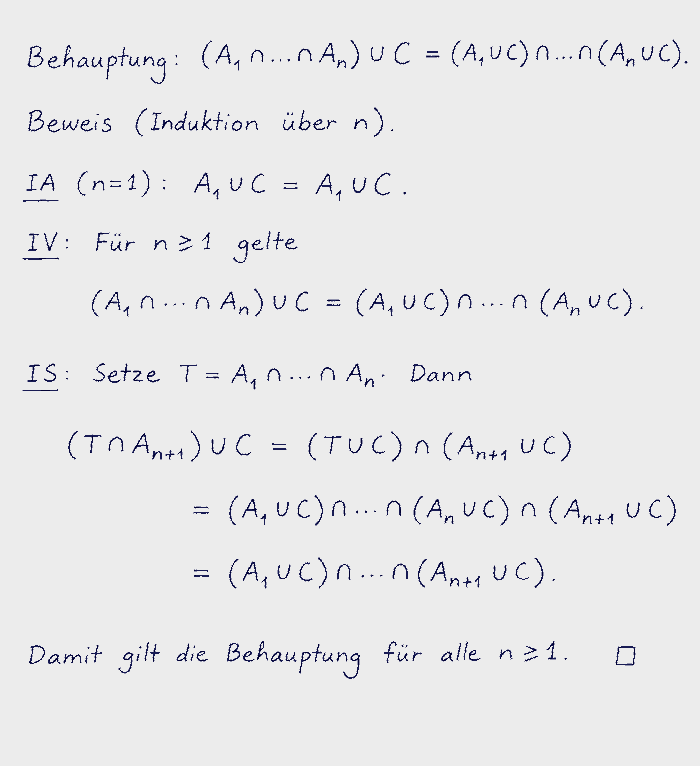

Görseller
Bu bölüm, Übungsblatt çalışmalarında hazırlanan görseller için ayrıldı.
İndüksiyon ispatı · 3(c)
Kümelerde dağılım özelliğinin kısa, el yazısı biçimindeki tümevarım ispatı.

Bu bölüm, Übungsblatt çalışmalarında hazırlanan görseller için ayrıldı.
Kümelerde dağılım özelliğinin kısa, el yazısı biçimindeki tümevarım ispatı.
